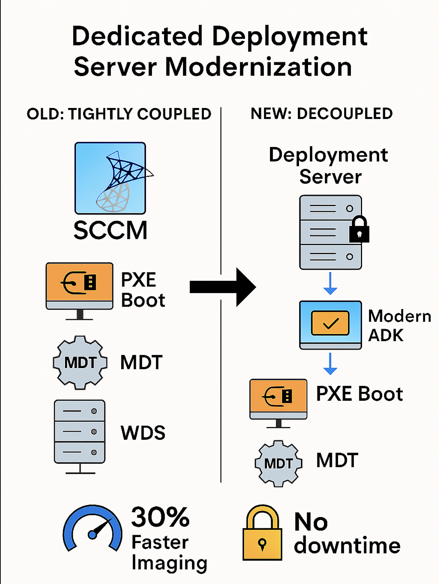

Challenge
Previously, the SCCM server also hosted PXE boot, WDS, and MDT, creating a single point of failure. If SCCM was down, deployment was down—and vice versa. The goal was to decouple deployment from SCCM and modernize the imaging stack for speed and reliability.
Tools & Technologies
- Windows Deployment Services (WDS)
- Microsoft Deployment Toolkit (MDT)
- Windows ADK for Windows 10 & 11
- PXE Boot Configuration
- Driver Injection & Model-Specific Task Sequences
Implementation
- Provisioned a new dedicated deployment server separate from SCCM
- Installed WDS and Windows ADK for Windows 10 and 11
- Migrated MDT shares and deployment task sequences
- Reconfigured PXE boot to point to the new deployment server
- Updated driver packages for all supported PC models to accelerate deployment
- Tested and validated deployment speed and reliability across hardware types
Architecture Diagram
Impact
- Eliminated SCCM-deployment interdependency and single point of failure
- Improved deployment speed with updated drivers and modern ADK support
- Enabled faster recovery and isolated troubleshooting for imaging services
- Modernized deployment infrastructure to support Windows 10 and 11